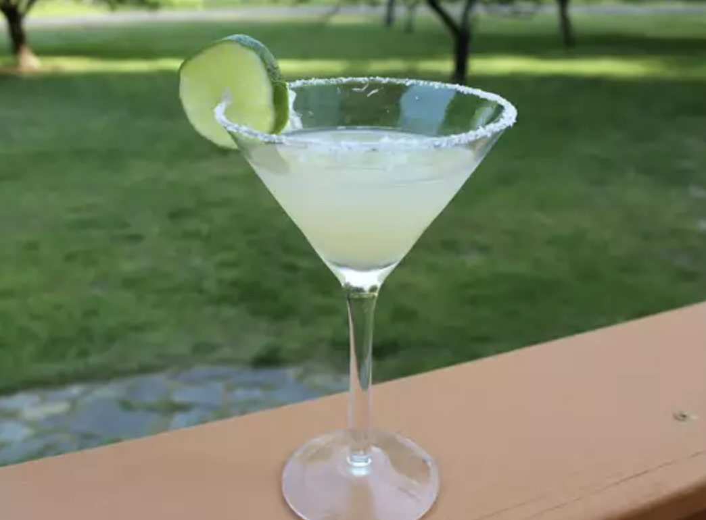

Margarita Cocktail
Home

Description
A classic margarita cocktail drink served straight up or on the rocks, is one of the most popular cocktails of all time.
And for good reason! It will cool you down on a hot day or warm you up on a cool day. Any day is a good day for a margarita.
Ingredients
- 1 tablespoon kosher salt
- 1 ½ fluid ounces tequila
- 1 fluid ounce orange flavored liqueur
- ½ fluid ounce lime juice
- 1 cup ice
- 1 lime wheel
Instructions
- Sprinkle salt on a small plate.
- Lightly wet the rim of a cocktail glass or margarita glass with a damp paper towel.
- Dip the moistened rim in salt to coat. Set aside.
- Combine tequila, orange-flavored brandy, and lime juice in a cocktail shaker.
- Add ice and shake until chilled.
- Strain into a salt-rimmed cocktail glass or a salt-rimmed, ice-filled margarita glass.
- Garnish with a lime wheel.